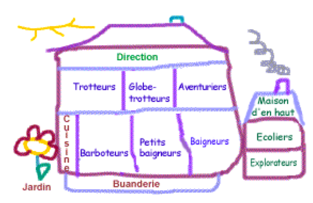

Infrastructure
Visite guidée !
En cliquant sur les différentes cases (ou différents noms), vous pouvez entrer à l'intérieur de Croquelune et visiter les locaux tels que cuisine, salles de groupes ou encore notre jardin.

Création du site par ENOXONE

Copyright © 2013 - Croquelune - Plan du site - Mentions Légales
Croquelune, rue de la Gare 35 bis, 1260 Nyon • info@croquelune.ch • Tél. : 022 - 994 40 60